Subtraction of Exponents
If n and m are positive integer and a is real number where a is not equal to 0, then
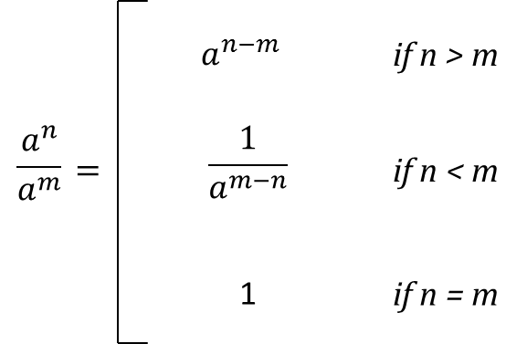
We simplify an expression by using the quotient rule.
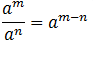
The quotient rule states that to divide two exponents having the same bases, you keep the base and subtract the exponents. This is similar to reducing fractions.
When you subtract the exponents, place the answer in the numerator or in the denominator depending on where the higher valued exponents is located.
If the exponent with higher value is in the denominator, place the difference in the denominator and vice versa, this will help avoid negative exponents.
Simplify the following expressions:
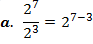
Copy the base and subtract the exponents
|
|
= 24
To simplify,
= 2 ⋅ 2 ⋅ 2 ⋅ 2 = 16
|
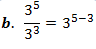
Copy the base and subtract the exponents
|
|
= 32
To simplify,
=3 ⋅ 3 = 9
|
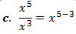
|
|
Keep the base and subtract the exponent
|
|
= x2
|
To divide two exponential expressions with the same bases, copy the base and subtract the exponents.
If n = m, the result follows immediately because
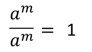
Proof:
If n = m, the result follows immediately because
If n > m, then the integer n - m is positive. Therefore, an = am • a n-m. Thus:
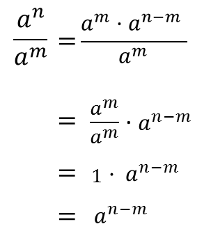
If n < m, the integer m-n is positive; thus am = an • am - n . Hence
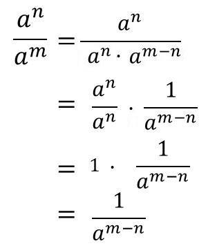
Examples:
a. x5
x5
b. x10
x5
c. x3
x7
d. 8x5y8
2x3y4
Solution:
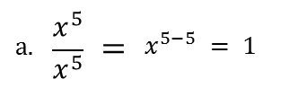
If the bases are the same and have different exponents, subtract the exponents. (Top exponent minus bottom exponent)
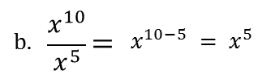
The bases are the same, so the exponents are subtracted. (Top exponent minus bottom exponent)
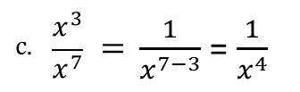
The bases are the same, so the exponents are subtracted. To keep away the negative sign of the exponent you need to get the reciprocal to make the exponent positive.
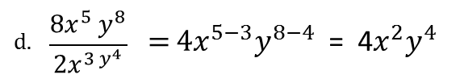
Just subtract the exponents from the same bases, and just divide the given coefficient.